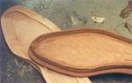
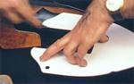
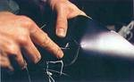
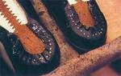
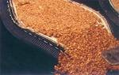
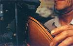

La horma de un zapato de fabricación industrial sólo puede elaborarse a partir de unos valores medios que suelen dar muy buenos resultados.
Por ejemplo, en Church's existen hasta seis anchuras distintas para cada modelo. La mayoría de los hombres encuentran lo que necesitan.
En los zapatos de fabricación industrial las plantillas se cortan a la medida adecuada con ayuda de una máquina para minimizar la pérdida del material.
Los zapateros a medida cortan las suelas una a una.
Después de que la plantilla haya sido fijada a la horma se pega una fina cinta de piel, la pestaña del hendido.
A ella se coserá más tarde el cerquillo y la pala. Por eso, el zapato de cerquillo cosido es estable y flexible.
La pestaña del hendido puede igualmente elaborarse a partir de la plantilla.
Así proceden también los zapateros a medida, pero estos trabajan normalmente sin máquinas y separan la pestaña del hendido de la plantilla.
Dos plantillas con pestañas del hendido grabadas y dobladas hacia arriba.
En Church's se puede optar en la fabricación industrial por esta alternativa de pestaña del hendido pegada.

Mientras se preparan las plantillas y las pestañas del hendido los cortadores cortan las partes de la pala.
Para ello es necesario los patrones para cada una de las partes de ésta.

Los closers cosen las partes de la pala, con pespuntes y tachones, en parte a mano, y unen la pala con el forro.
En los zapatos de calidad el forro es de piel de cabra o tela.

La pala dispuesta sobre la horma se fija provisionalmente y se cose a la pestaña del hendido y al cerquillo.
Este es el paso decisivo en el arte de la confección a medida de estos zapatos.
Lo maravilloso es que una sola costura une la pala, la pestaña del hendido y el cerquillo.
La costura que pasa por la pala, la pestaña del hendido y el cerquillo se entabla en el talón.
De manera que bajo el talón no se cose la suela en el cerquillo, sino que se sujeta con clavos desde dentro a través de la plantilla junto al tacón.

Puesto que el cerquillo circunda la plantilla, queda un vacío cuando se coloca la suela exterior.
Este espacio hueco se rellena con una masa compuesta de corcho y resina en la que el pie encuentra un lecho perfecto sobre el que descansar.

La suela exterior se cose al cerquillo mediante una máquina.
La costura que se puede ver bajo la suela es la misma costura que une la suela y el cerquillo.

El tacón de un zapato de cerquillo cosido se compone de cuatro a cinco capas de piel colocadas una encima de la otra según la altura del tacón.
Entre la última y la penúltima capa de piel se coloca una capa de goma puesto que es el lugar donde el tacón se desgasta más.